|
MICROBOT SIKO |
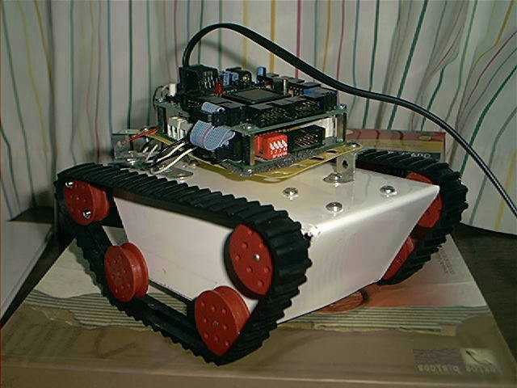
Siko es un robot-oruga de muy bajo coste pensado para aquellos que se quieren iniciar en el mundo de la microbótica. El esqueleto está realizado con una plancha de aluminio y piezas de meccano y el kit de orugas de Cebek (C-6083), como motores se utilizan los servos Hitec HS-303 , trucados para poder funcionar como motores de corriente continua normales.
La finalidad del robot-oruga Siko, es obtener un robot de bajo costo, que pueda sortear obstaculos de pequeño tamaño con facilidad para que pueda “navegar “ por un terreno no del todo liso, con pequeños obstaculos como cables, alfombras, pequeños escalones...etc. El usuario puede ampliar la estructura, o modificarla para lograr un robot adaptable a sus necesidades. En definitiva es un robot-oruga “todoterreno” de proposito general.
Para su control se utiliza la tarjeta CT6811 , basada en el microcontrolador 68hc11 de Motorola y la tarjeta CT293+ para el control de los motores y los sensores de infrarrojos. Sin embargo, se puede utilizar cualquier otra electrónica o microcontrolador, como por ejemplos los PICs.
Estructura mecánica realizada con una plancha de aluminio
Motores: servos Hitec HS- 303 trucados para girar 360 grados
tarjeta CT293+ para controlar dos motores, 4 sensores de infrarrojos del tipo CNY70 y hasta 8 bumpers
tarjeta CT6811 para la programación del robot
Alimentación: entre 4.5 - 6 voltios. Se utilizan 4 pilas AA. La alimentación de los motores es independiente. Se ha utilizado una batería recargable de 7,2 voltios a 1200 mA.
Robot abierto. Están disponibles los esquemas de la estructura y la electrónica y se permite su copia y modificación
José A. Pichardo Gallardo. Marzo-2004. <tartesos2@telefonica.net>
Siko es un robot abierto por lo que están disponibles los esquemas y la documentación de su estructura mecánica . Se conceden permisos para copiar, modificar y distribuir las modificaciones, siempre que se mantenga esta misma nota.
La estructura mecánica está compuesta por una plancha de aluminio de 2mm, piezas de meccano, y el kit de orugas de CEBEK C-6083 y dos servos Hitec HS-303 trucados.
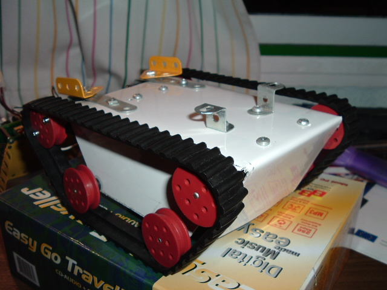
Siko se controla mediante las tarjetas CT6811 y CT293+ que se unen formando una torre, colocándose encima del chasis. En este caso la tarjeta CT6811 lleva el Motorola 68HC11E2, el cual dispone de 2 K de memoria EEPROM y 512 Byte de memoria RAM.
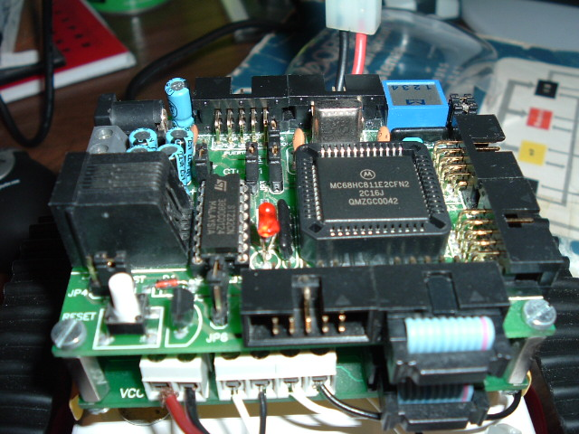
El software que se utiliza es el mismo que se usa para la tarjeta CT6811, que permite cargar programas en la ram del 6811, así como grabar en la eeprom. Dentro de las CTTOOLS es muy útil el programa CT294 que permite controlar a Siko desde el PC y leer los sensores de infrarrojos.
Todo el software está bajo licencia GPL, por lo que están disponibles las fuentes.
La construcción del robot la podemos clasificar en tres etepas:
Creación del esqueleto.
Instalación de la tarjeta controladora.
Instalación de las baterías.
-Etapa 1: Creación del esqueleto.
La parte principal del esqueleto es una plancha de aluminio de 2 mm de las que podemos encontrar en cualquier carpinteria de aluminio. Primero debereis de descargaros el plano del esqueleto en el vinculo al final de la página. Despues ponerlo sobre la plancha de aluminio. Con un papel de calco, y una regla pasando por encima de las lineas del plano pasareis dichas lineas a la plancha.
Con una sierra de calar con una hoja de metal podeis cortar la chapa. No es muy dificil de cortar porque la forma del esqueleto no tiene muchas esquinas.Después de cortarlo, os recomiendo que le hagais los agujeros para los ejes. Con un taladro y una broca de metal, tampoco os costará mucho hacerlos. Debeis de ser precisos. Para doblar la chapa apoyandoos en cualquier mesa y con un poco de presión se dobla enseguida. Os quedará algo así:
|
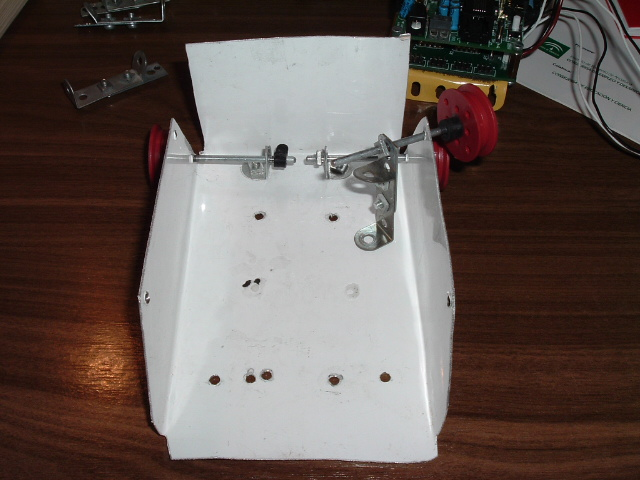 |
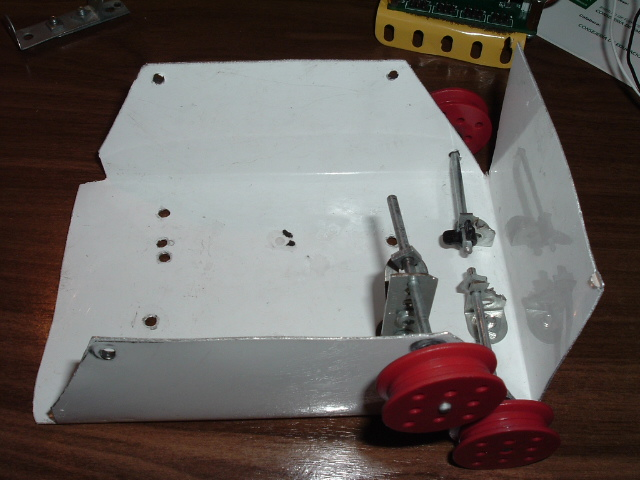 |
Lo siento pero le hice las fotos despues de ponerle tres ejes.
A continuación os pongo algunas de las piezas de meccano que he utilizado.
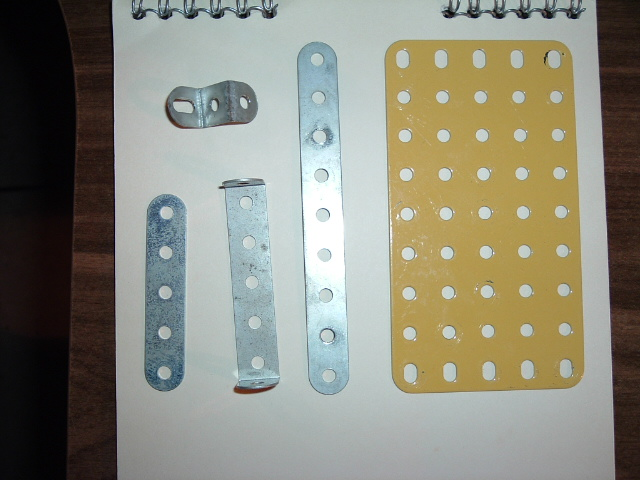
Las orugas se obtienen del kit de Cebek (C-6083). El kit trae 16 “medias ruedas”, dos pares de orugas de goma y cuatro ejes de metal. Utilizaremos las orugas de goma grandes. Los ejes los cortaremos por la mitad con la sierra de calar. Atención a como sujetamos los ejes para cortarlos, porque se nos puede escapar la sierra de calar y cortarnos un dedo ( a mi casi me pasó).
Montaremos dos ruedas por eje. En un kit de meccano uno básico encontre la arandela negra que podeis ver en la foto, la cual nos servirá para separar un poco las ruedas de la chapa al colocarla en el chasis.
|
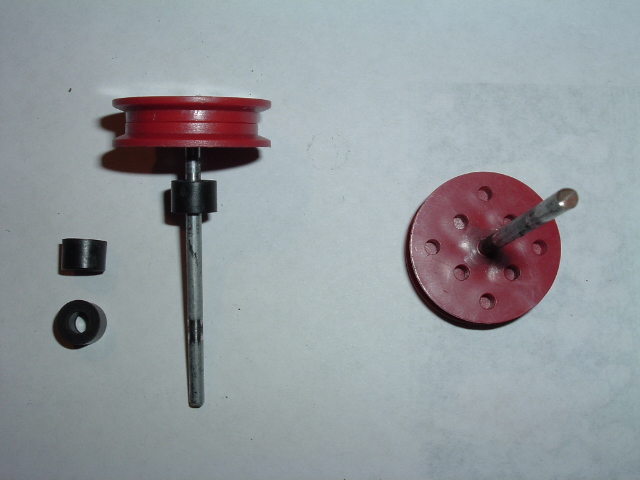 |
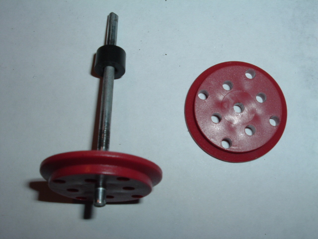 |
Cada eje necesita dos puntos de apoyo para tener estabilidad. Uno se lo da la chapa, el otro lo fabricaremos con piezas de mecanno. Yo use dos piezas de mecanno que tuve que unir por un par de tornillos . Puede que en los kit de mecanno encontreis una pieza de suficiente altura para sujetar el eje. Yo tuve que fabricarlo como se ve en la foto. También podeis apreciar que no me salió bien el agujero donde va el eje a la primera.
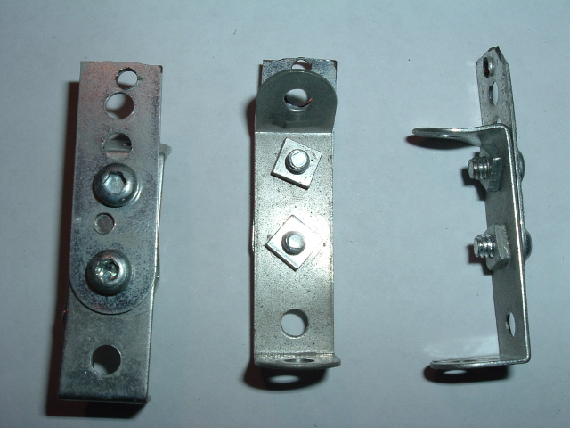
Está hecho con una pieza de cuatro agujeros plana, y una de cinco con angulos rectos. La pieza de cuatro, la corte a la altura del cuarto agujero. Ademas le tuve que hacer otro agujero con la broca para pasar el eje, pues los agujeros de la pieza de meccano quedaba demasiado bajo.
Una vez atornillado a los agujeros del chasis, quedará así. (En la parte trasera del robot hay que atornillarlos a los agujeros situados más al centro.)
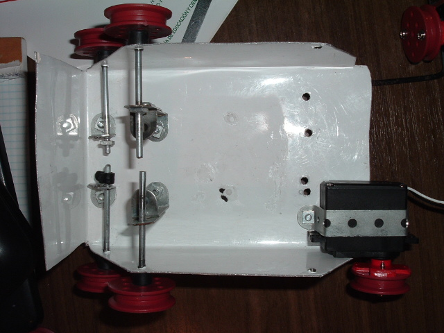
En la parte delantera fijada al chasis, pondremos una pieza de tres agujeros, con un codo de 90 grados. Tendremos que cortarlo, ( lo hice con unos alicates) tal y como viene en la foto. Para poder después doblar la chapa delantera. Tambien hacerle un agujero a la altura del agujero de la chapa por donde entra el eje.
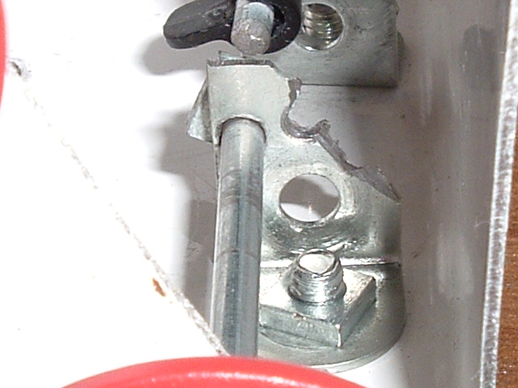
Pasamos ahora a montar los motores. Estos son servomotores Hitec HS-311 modificados para girar como motores de continua. Podemos montar cualquier servomotor de otra marca con las mismas medidas. Cada servomotor por lo general lleva una serie de accesorios intercambiables para poner sobre el eje de giro. Uno de ellos es una cruceta en este caso roja, a la cual tenemos que cortar los bordes para poder atornillar dos medias ruedas y que la cruceta no sobresalga por detras de las ruedas.
|
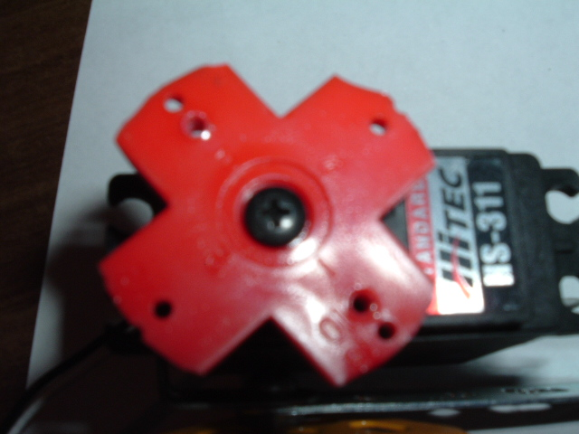 |
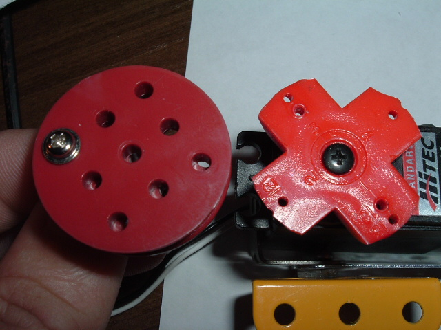 |
Para montar los motores en el esqueleto, tendremos que fabricarle unas cinchas. Con las piezas de meccano. Para ello utilizaremos una pieza de 9 agujeros, y una de cinco. Las atornillamos, y con el mismo servo les damos la forma que se ve en la foto. En la parte que va arriba del chasis de la pequeña cincha que hemos fabricado le podemos acoplar un pieza triangular donde después podremos poner la tarjeta de control.
Esta cincha, se atornilla a la chapa del esqueleto. La parte plana se pone por la parte exterior de la chapa, y la parte más curvada por la parte interior. Las cinchas serán iguales para ambos motores, y tendrán la misma forma. Puede que al hacer la cincha no os cuadren los agujeros para atornillarla. Entonces tendreis que hacer un pequeño agujero. Así es como queda atornillado.
|
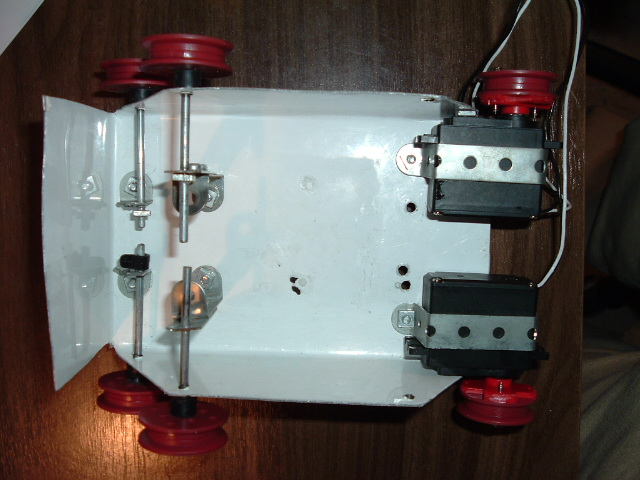 |
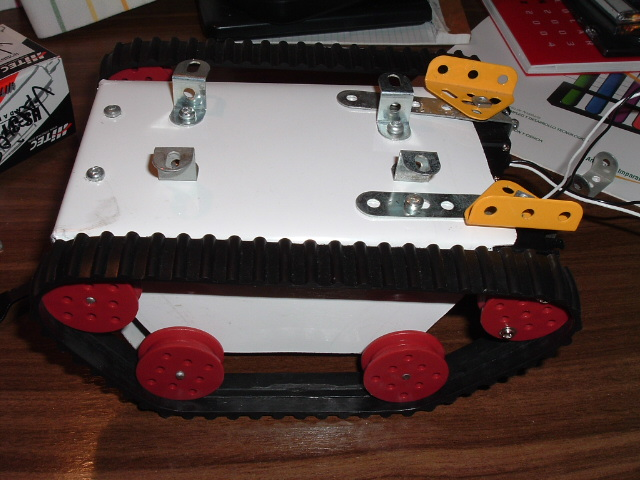 |
Podemos aprobechar los agujeros hechos para los soporetes de los ejes para atornillar en la parte de arriba del chasis una piezas como las que veis en la foto. Estos soportes nos serviran para acoplar otros dispositivos o sensores y fijarlos bien al chasis. Con esto tenemos terminado el chasis básico.
-Etapa 2: Instalación de la tarjeta controladora.
Ahora usaremos una placa de cinco por nueve agujeros. Doblaremos la placa por los extemos , y atornillaremos la CT6811 a ella. Yo he puesto una pequeña espuma aislante entre la placa y la tarjeta para protejerla.
|
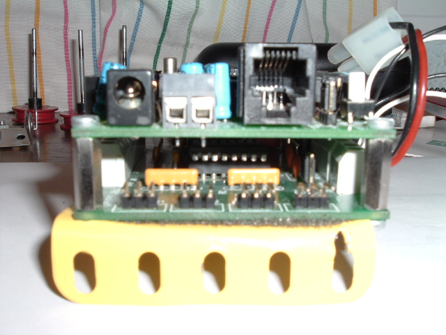 |
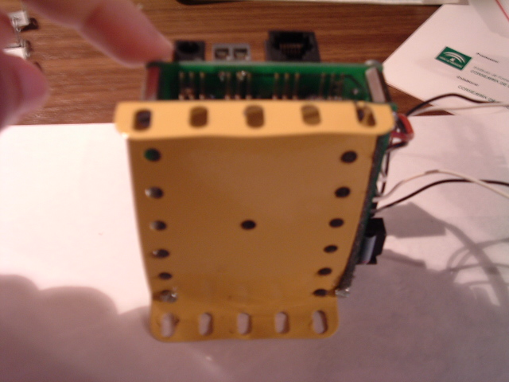 |
Despues atornillaremos el bloque al chasis. Yo lo he atornillado con un solo tornillo en cada lado para poder levantar la placa y asi meter debajo las pilas de alimentación de la CT6811. Así ahorramos espacio.
-Etapa 3: Instalación de las baterías.
La alimentación de los motores, la he colocado en un espacio que quedo entre los soportes de los ejes. La batería que he utilizado es una de 7,2 voltios a 1200mA. La tipica bateríade modelismo. Así conseguimos que la parte delantera del chasis nos quede libre para poner todo tipo de sensores.
|
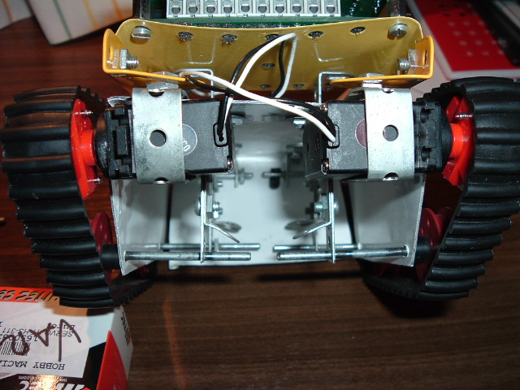 |
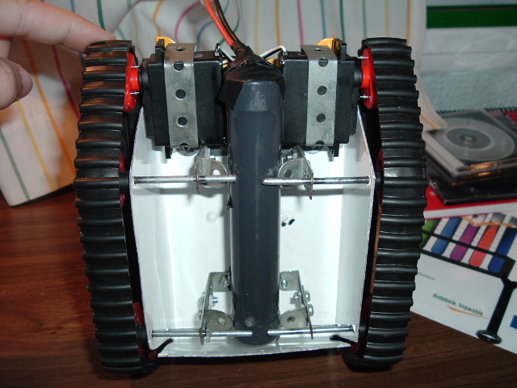 |
En un futuro próximo Siko dispondrá de un sensor de sonar. Este estará sobre un servomotor que le permitirá tomar mediciones alrededor del robot.
|
DOWNLOAD |
|
Fichero |
Descripción |
|
Plano.JPG (198Kb) |
Planos de Siko |
|
|
|
|
|
|
{kind=link}